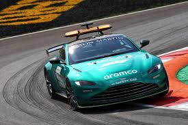
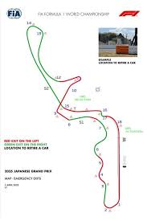

FIA telah menambahkan peta sirkuit baru mulai dari Grand Prix Jepang dan seterusnya dalam upaya untuk mengurangi kebutuhan akan intervensi safety car setelah pembalap Formula 1 harus meninggalkan mobil mereka di lintasan, demikian yang diketahui oleh Motorsport.com . Setelah melakukan analisis menyeluruh terhadap penggunaan safety car selama musim 2024. FIA menyimpulkan bahwa ada sejumlah kejadian yang mengejutkan di mana panggilan safety car dapat dihindari dengan menghentikan mobil di lokasi di mana ia dapat dipulihkan tanpa mengirim kendaraan ke lintasan. Dalam kasus-kasus ini, safety car dikirim ke lintasan, padahal bendera kuning atau Virtual Safety Car (VDC) sudah cukup. Dalam upaya untuk mengatasi masalah ini, FIA telah menambahkan peta sirkuit baru ke dalam catatan acara, yang didistribusikan ke semua tim F1 sebelum dimulainya setiap akhir pekan balapan. Peta baru ini pertama kali digunakan di Cina dan sekarang telah ditambahkan ke dokumen resmi di Grand Prix Jepang akhir pekan ini. FIA telah menginformasikan kepada para tim selama briefing pembalap tentang tempat terbaik untuk menghentikan mobil mereka jika terjadi masalah yang tidak terlalu penting - misalnya, ketika ada masalah teknis. Alasan utama untuk menyampaikan informasi ini adalah untuk menyoroti area-area di mana pemulihan dapat ditangani dengan cepat, sehingga sesi dapat dilanjutkan secepat mungkin dan juga memungkinkan tim untuk kembali ke garasi mereka lebih cepat, yang penting terutama selama sesi latihan. Di sepanjang lintasan, lokasi-lokasi dengan celah yang cukup lebar untuk dilewati mobil juga ditandai dengan cat berwarna oranye neon pada pembatasnya. Selain menunjukkan apakah mobil harus berhenti di sisi kiri atau kanan lintasan jika terjadi masalah, peta ini juga dilengkapi dengan tanda seru untuk menunjukkan tempat berhenti yang optimal. Ini adalah lokasi-lokasi di mana terdapat celah yang cukup besar pada pembatas dan marshal yang cukup untuk memungkinkan pemulihan yang cepat - berpotensi menghilangkan kebutuhan akan safety car. Ada juga rencana untuk mengintegrasikan informasi ini ke dalam perangkat lunak yang digunakan oleh tim di pitwall. Autosport memahami bahwa pembaruan perangkat lunak yang diperlukan akan diimplementasikan dalam beberapa balapan berikutnya.
 